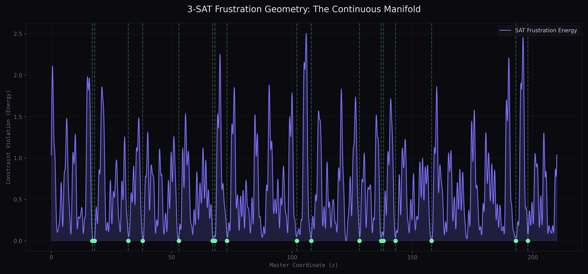
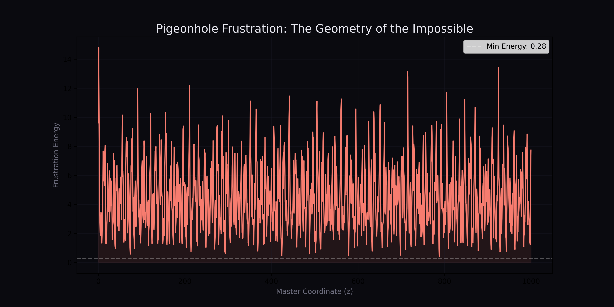

How to read this repository.
The page below is meant to read more like a technical essay than a pitch deck. It tries to separate the stable arithmetic ideas from the more speculative framing, while still keeping the project’s original curiosity intact.
The sturdy part
The cleanest part of the project is the arithmetic primitive: encode choices as residues inside local constraint groups (rows, columns, boxes, lanes, etc.), then use exact incremental CRT jumps to set new values while preserving every already-solved residue in that group exactly. No global modulus explosion. No tearing down solved commitments.
The exploratory part
The cosine-wave losses, SAT landscapes, and continuous-geometry framing are better described as exact smooth potentials or lifted encodings. What is heuristic is usually the optimization strategy, not the mathematical construction itself.
The useful framing
The most productive way to think about the project is as a specialized search-and-repair idea for structured discrete problems. It is much more convincing in that role than as a sweeping claim about optimization in general.
The exact mechanism underneath the strongest demos.
Most of the repository reduces to one scalar coordinate $z$, a set of pairwise coprime moduli, and either a differentiable residue surrogate or an exact incremental CRT update.
Residue encoding
When the moduli are pairwise coprime, one scalar coordinate encodes one full discrete state vector.
Cosine residue loss
This is better thought of as an exact smooth objective for congruence satisfaction: its global minima occur exactly at the target residue classes. The heuristic part begins when you ask gradient descent to find those minima reliably.
Garner / CRT reconstruction
Several files compute an exact target coordinate from a desired residue pattern. That is the arithmetic backbone of the “teleporter” story.
Incremental safe jump
This is the strongest real mechanism in the repo. It sets a new residue while preserving all already-solved ones exactly. The best exact-search demos use this directly.
Exact
CRT decoding, Garner reconstruction, and residue-preserving jumps are exact arithmetic operations. They do exactly what they say they do, with no approximation layer in the update itself.
Exact lifts
The cosine objectives and some of the energy constructions are not arbitrary hacks. They are smooth lifts with the right zero sets or the right violation geometry for the discrete structure they are trying to represent.
Where heuristics enter
Heuristics mostly enter through optimization schedules, thresholding, ghost-residue semantics, and search budgets. In other words, the weak point is usually the solver strategy or extension regime, not the algebraic construction itself.
def garners_jump(current_z, target_val, prime_idx, solved_primes):
p_target = PRIMES[prime_idx]
M = 1
for p in solved_primes:
M *= p
diff = (target_val - current_z) % p_target
k = (diff * mod_inverse(M, p_target)) % p_target
return k * M
What the benchmarks taught us.
Two benchmark scripts now anchor the repo: an internal scaling harness and a direct comparison against OR-Tools CP-SAT on the same generated instances. They are less about “winning” and more about understanding where this style of search has leverage.
| Benchmark | CRT Search | CP-SAT | Takeaway |
|---|---|---|---|
| Timetabling 12 courses, 4 options |
100% success, median 0.4 ms | 100% success, median 3.1 ms | Nice result for the arithmetic search on clean planted-feasible structure. |
| Timetabling 24 courses, 5 options |
100% success, median 2.1 ms | 100% success, median 4.1 ms | Still a good showing at the tested synthetic size. |
| Inventory Base 20 orders, 3 options |
100% success, 5.9 ms, objective 2851 | 100% success, 2.4 ms, objective 2851 | CP-SAT is already the cleaner optimizer here. |
| Inventory Base 35 orders, 4 options |
100% success, 1031.1 ms, objective 4946 | 100% success, 4.3 ms, objective 4946 | This is where the standard exact solver pulls away. |
| Inventory Base 50 orders, 4 options |
100% success, 1252.6 ms, objective 7403 | 100% success, 4.7 ms, objective 7390 | CP-SAT is faster and slightly better on objective quality. |
| Inventory Repair 50 orders, 25% locked |
80% success, 754.4 ms, objective 7496 | 80% success, 3.4 ms, objective 7450 | The repair angle remains interesting, but the baseline solver is stronger overall. |
Every example in the repository, grouped by what it seems to teach.
The repo contains a real mix: some files are mathematically central, some are strong assignment demos, some are visualizations, and some are better treated as analogy-driven extensions.
Core differentiable logic
prime_logic_nn.py, hard_prime_maze.py, and garner_navigation.py show the residue-loss story, the local-minimum problem, and the shift from wave wandering to exact coordinate targeting.
Constraint assignment demos
traffic_controller.py, prime_timetable.py, prime_hypergraph_timetabling.py, and prime_inventory_allocation.py are the strongest product-facing examples.
Classic puzzle / CSP examples
prime_n_queens.py, prime_mastermind.py, prime_pigeonhole.py, and prime_pigeonhole_strict.py show exact decoding, search, and UNSAT frustration.
SAT exploration
prime_sat_landscape.py, verify_sat.py, final_sat_verification.py, and extract_sat_solutions.py visualize and audit a SAT energy surface.
Analogy-heavy extensions
prime_word_ladder.py, prime_alien_dict.py, and prime_regex_manifold.py stretch the framing beyond the cleanest arithmetic core.
Multi-dimensional Sudoku
crt_sudoku_hierarchical.py uses distributed CRT jumps across row, column, and box groups. Each group is its own local CRT microspace. This is the multi-dimensional version of the method — not one giant z, but a hierarchy of smaller exact jumps.
Benchmark harnesses
large_scale_benchmark.py measures internal scaling, while benchmark_vs_cpsat.py provides the proper external baseline against OR-Tools CP-SAT.
A guided map of the repository.
This section is here to make the repo legible. It names the major files, what they do, and how they fit into the larger story.
Source files
src/prime_logic_nn.py
Minimal residue-loss network targeting the CRT coordinate for [1, 0, 1].
Core
src/hard_prime_maze.py
Higher-prime stress test showing local minima and optimization difficulty.
Core
src/garner_navigation.py
Direct regression to an exact CRT target instead of wandering on the wave landscape.
Core
src/traffic_controller.py
Safe traffic-state selection with hybrid loss and explicit admissibility rules.
Demo
src/prime_n_queens.py
Backtracking search with CRT-preserving jumps between accepted queen placements.
Strong
src/prime_timetable.py
Class scheduling by residues, conflict checks, and exact incremental jumps.
Strong
src/prime_hypergraph_timetabling.py
NP-hard course placement demo built around exact jump updates.
Commercial
src/prime_inventory_allocation.py
Flipkart-style order promising with stock, lane, cost, and locked-order repair.
Commercial
src/prime_mastermind.py
CRT-encoded Mastermind state space plus standard candidate elimination.
Puzzle
src/prime_sat_landscape.py / verify_sat.py / final_sat_verification.py / extract_sat_solutions.py
SAT landscape construction, brute-force truth checks, and ghost-residue analysis.
Audit
src/prime_pigeonhole.py / prime_pigeonhole_strict.py
UNSAT frustration energy and a stricter discrete energy with binary penalties.
UNSAT
src/prime_word_ladder.py / prime_alien_dict.py / prime_regex_manifold.py
Later extensions with mixed rigor, useful mostly as framing experiments.
Mixed
src/crt_sudoku_hierarchical.py
Multi-dimensional CRT Sudoku: distributed exact jumps over row/col/box manifolds.
Strong
src/large_scale_benchmark.py / benchmark_vs_cpsat.py
Internal scaling tests and direct benchmark against OR-Tools CP-SAT.
Benchmark
Documentation files
README.md is the main overview. MATH.md is the code-first audit. MONEY.md is the commercialization note. docs/MATH.md, docs/MATH2.md, docs/podcast.md, and docs/codingsession.md preserve older and more exploratory framings.
How to read this repo productively
Start with the benchmark files and the assignment demos. Then read the arithmetic core. Only after that should you read the topology language and podcast-style docs, because those are the most likely to overstate the evidence.
1. README.md 2. MATH.md 3. src/prime_hypergraph_timetabling.py 4. src/prime_inventory_allocation.py 5. src/large_scale_benchmark.py 6. src/benchmark_vs_cpsat.py 7. src/prime_logic_nn.py 8. src/garner_navigation.py 9. Everything else, with caution
Visual and textual artifacts included in the repository.
Two generated images and several writeups are part of the repo. They are useful, but they are not all equal in evidentiary weight.


prime_pigeonhole_strict.py.
What's new?
Benchmark summary added
Added large_scale_benchmark.py and benchmark_vs_cpsat.py with direct OR-Tools CP-SAT comparison on timetabling and inventory allocation problems.
Math audit published
MATH.md now contains a code-first audit rating the arithmetic core at 61/100, noting strong arithmetic foundation with some overreach in theory and extensions.
Commercial allocation demo
prime_inventory_allocation.py added with locked-order repair scenario — the main battleground for the CRT vs CP-SAT benchmark comparison.
Extended problem analysis
New files documenting the SAT landscape, UNSAT frustration, and stricter discrete energy variants alongside the existing puzzle examples.